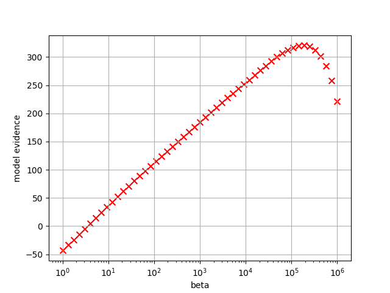
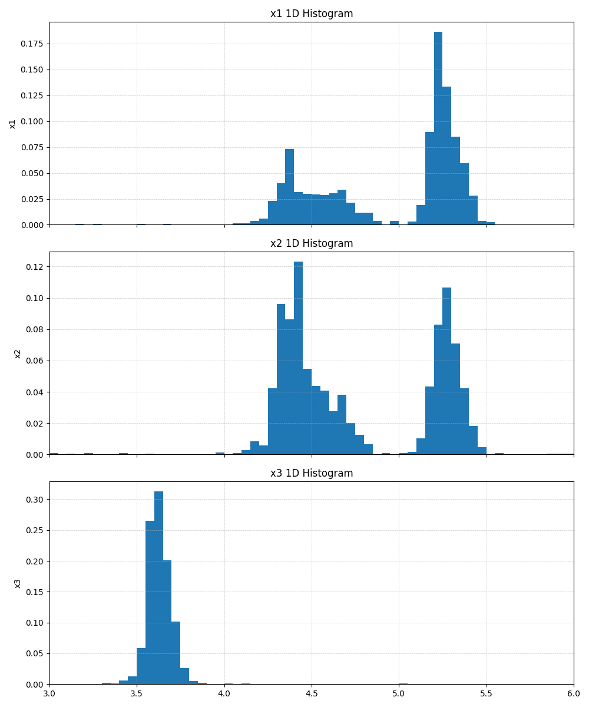

Tutorial#
This tutorial explains the workflow for analyzing PAMC calculation results using a concrete example. For detailed options and output formats of each tool, see Reference.
Prerequisites#
Python 3.9 or later
matplotlib (required for histogram and model evidence plots; installed together with ODAT-SE)
Post-processing tools are installed together with ODAT-SE as commands prefixed with
odatse_(e.g.odatse_extract_combined)
Workflow Overview#
The overall workflow for analyzing PAMC calculation results is as follows:
Run PAMC calculation to obtain MCMC logs and partition function values
Calculate model evidence to identify the optimal inverse temperature \(\beta\)
Aggregate data by temperature point to collect replica configurations at each temperature
Create histograms to visualize posterior probability distributions
The output of each step serves as input for the next step.
PAMC calculation
├─ output/fx.txt ──────────────→ (2) model evidence calculation
└─ output/{rank}/result_T*.txt ─→ (3) aggregate by temperature
└─ summarized/ ─→ (4) histogram creation
1. Running PAMC Calculations#
As an example, we use a calculation from the TRHEPD direct problem solver (odatse-STR). The parameter space is 3-dimensional, with 51 temperature points logarithmically spaced from T=1.0 to 1.0e-6. Each annealing step consists of 20 MCMC steps. The number of replicas is set to 100 per process with 4 MPI processes. For the complete set of input files and data used in this example, see the odatse-STR analysis example in the ODAT-SE Gallery. Note that the sample outputs shown below are abbreviated and simplified.
Results are output under the output directory. There are two main types of output file.
output/{rank}/result_T{index}.txt – MCMC calculation log (per temperature point)
# step walker T fx x1 x2 x3 weight ancestor
0 0 1.000000e+00 1.234567e+01 4.500 3.200 5.100 1.000000e+00 0
1 0 1.000000e+00 1.198765e+01 4.520 3.180 5.080 1.000000e+00 0
...
Each row corresponds to one MCMC step of one walker (replica), recording the temperature T, the objective function value fx, the parameter values x1 to x3, the sampling weight, and the ancestor index used in resampling.
The column labels depend on the label_list setting (x1, x2, … by default). The search parameters in this example are three variables corresponding to atomic coordinates, denoted \(z_1, z_2, z_3\) in the text below.
output/fx.txt – Partition function and f(x) statistics
# $1: 1/T
# $2: mean of f(x)
# $3: standard error of f(x)
# $4: number of replicas
# $5: log(Z/Z0)
# $6: acceptance ratio
1.000000e+00 1.234e+01 5.678e-01 400 0.000000e+00 0.850
...
Each row corresponds to a temperature point, recording the inverse temperature beta, mean and standard error of f(x), number of replicas, log ratio of partition functions, and acceptance rate.
Note
If export_combined_files is set to true, logs are consolidated in combined.txt.
Use odatse_extract_combined to extract result.txt.
The extracted result.txt is not split by temperature point, so also run odatse_separateT
to split it into per-temperature files result_T{index}.txt before proceeding to the next step.
odatse_extract_combined -t result.txt -d output
odatse_separateT -d output
Note
If separate_T is false, logs are output to result.txt.
Use odatse_separateT to split into files by temperature point.
odatse_separateT -d output
2. Calculating Model Evidence#
The model evidence \(\log P(D;\beta)\) is expressed as:
Calculate model evidence using the partition function values \(\log Z/Z_0\) from output/fx.txt. This requires specifying the search space volume \(V_\Omega\) (normalization factor for prior probability) and the number of data points \(n\).
In this example, the search space spans [3.0, 6.0] for each of z1, z2, z3. The number of data points (rows in experiment.txt) is 70.
odatse_plt_model_evidence -V 27.0 -n 70 output/fx.txt
Model evidence values are written to model_evidence.txt, and a plot against beta is output to model_evidence.png. For detailed options, see odatse_plt_model_evidence.

Fig. 10 Plot of model evidence. The maximum occurs at \(\beta = 1.91\times 10^5\) (Tstep=44).#
The \(\beta\) that maximizes the model evidence corresponds to the inverse temperature at which the model best explains the data. When \(\beta\) is too small, the prior distribution dominates (underfitting); when too large, the model fits noise in the data (overfitting). By visualizing the posterior distribution at the optimal \(\beta\), you can evaluate the parameter estimation results.
3. Summarizing Search Data by Temperature Points#
From the MCMC step information in output/{rank}/result_T{index}.txt, extract and combine the replica configurations at the end of annealing.
odatse_summarize_each_T -d output -o summarized
Results are written to summarized/result_T{index}_summarized.txt. For detailed options, see odatse_summarize_each_T.
4. Creating 1D and 2D Marginalized Histograms#
Plot weighted posterior probability distributions \(P(z_i|D;\beta) = \dfrac{P(D|z_i;\beta) P(z_i)}{P(D;\beta)}\) using replica configuration data.
Focus on temperature points near the optimal \(\beta\) identified in Step 2 to examine the parameter distributions.
To create 1D histograms marginalized along each \(z_i\):
odatse_plt_1D_histogram -d summarized -o 1dhist -r 3.0,6.0
This creates histograms for each data file in summarized/, with output to 1dhist/. For detailed options, see odatse_plt_1D_histogram.

Fig. 11 Example 1D marginalized histogram output (shown for a higher-temperature point, Tstep=22, \(\beta=4.365\times 10^2\), for reference).#
To create 2D marginalized histograms:
odatse_plt_2D_histogram -d summarized -o 2dhist -r 3.0,6.0
This creates 2D histograms for combinations (z1,z2), (z1,z3), (z2,z3), with output to 2dhist/. The 2D histograms allow you to examine correlations between parameters. For detailed options, see odatse_plt_2D_histogram.

Fig. 12 Example 2D marginalized histogram output (shown for a higher-temperature point, Tstep=22, for the \(z_1\)-\(z_2\) axes, for reference).#